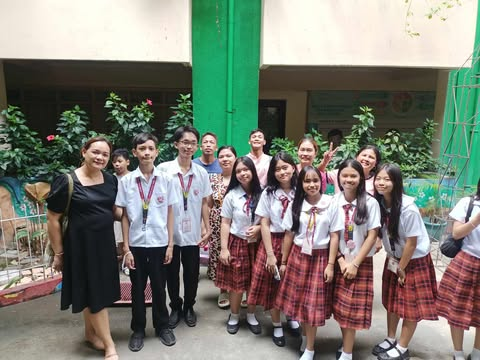

Im Arthur Joseph B. Batuhan and im 14 years old i live at Manila,Caloocan and i am a student at Lakan Dula High School, I live with Mother, Father, and 5 Sisters , My favorite thing to do is playing games, and playing badminton with my friends, My favorite subjects in school are Science, Tle, And Math.
My most important event in my childhood, was when i was 6 years old, and me and my family went to a resort, and we stayed in a big vacation house in the resort. While in the resort me and my sisters were playing in the pool, and i slipped out if the stairs and hit my head and almost drowned , but a man saw and saved me. This was the most challenging experience in my life, after i was really scared to go in the pool for the entire vacation , and just stayed in the house for the entire time only going out when i was hungry. This memory of my childhood was memorable because of the experience i had while i have long recovered from it, the memory still follows me everytime we go to a resort or the beach. Looking back on the memory i realize how stupid i was when i was a child, and how stupid it was for me to play near the walls and the deep part of the pool, but it taught me to be careful around the pool or the beach.
Tbh, my only plans are becoming an engineer like my dad, but other then than i dont really have any other plans , rather i just want to live a peaceful life with a good work balance, and still have good relationships in my work and personal life.
Now what makes me happy, the things that make me happy are playing with friends on a game or playing badminton, and just going out with them aswell as being with my family especially when we go out and have fun , aswell as feeling love,feeling love is wonderful as it makes you ponder about your feelings if its true or false, and feeling love just make us people feel happy or maybe even paranoid, but for me it makes me happy.
And now my values over the years, they haven't really changed much from when i was a child,im still working hard, and my dream is still the same the only thing i would say change is my confidence, after covid my confidence just went down alot and i couldn't even talk to some when f2f was back rather I'd just sit alone at the back, and it was a rough time but making friends along the way really changed me for better but sometimes worse, they made me gain back my confidence and strength , and so here i would like to say, enjoy life even the small things and never look down on yourself no matter what happens .